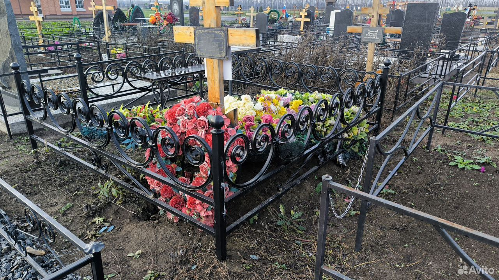
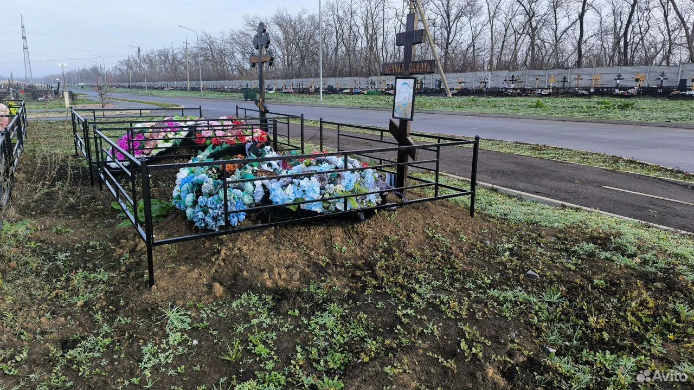
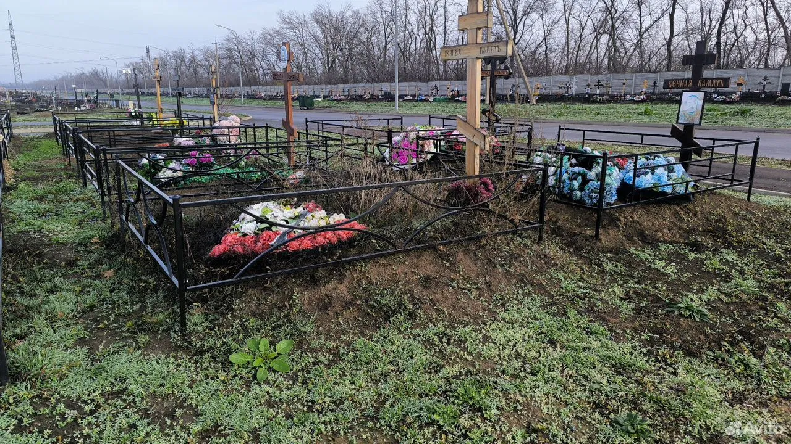

Оградки с установкой
Готовые размеры и изготовление по замеру. Стоимость зависит от длины, высоты, рисунка и материала.
Подробнее · от 10 000 ₽ →Изготовление, доставка, бетонирование и монтаж — всё включено в стоимость ограды. Подберём размер и оформление для вашего участка.

Сообщите размер участка и подготовьте фото — рассчитаем стоимость в день обращения.
Оградки и дополнительные работы по благоустройству захоронений. Опыт в сфере — 7–9 лет.
Готовые размеры и изготовление по замеру. Стоимость зависит от длины, высоты, рисунка и материала.
Подробнее · от 10 000 ₽ →Покраска металлической ограды. Объём и итоговую стоимость согласуем до начала работ.
От 2 500 ₽ →Изготовление крестов. Размер, материал и стоимость уточняются при заказе.
От 3 500 ₽ →Стол и лавка для обустройства места захоронения. Комплектацию обсудим при обращении.
11 000 ₽ →Благоустройство щебнем или морской галькой. Стоимость зависит от площади и выбранного материала.
От 6 500 ₽ →Изготовление таблички. Текст и оформление согласуем перед выполнением заказа.
2 000 ₽ →В стоимость ограды включены изготовление, доставка, бетонирование и монтаж. Другие размеры рассчитываем после замера.
Пенсионерам и людям с инвалидностью.
Итоговую стоимость всех работ согласуем до начала заказа.
Фотографии оградок: детали, варианты рисунка и оформление участка.


Позвоните по номеру +7 988 993-83-85. Сообщите размеры и расположение участка.
Согласуем выезд, уточним размер, рисунок ограды и дополнительные работы.
Изготовим, доставим и установим ограду с бетонированием. Срок — 7 дней.
Вы принимаете выполненную работу и оплачиваете заказ после установки.
Основные условия заказа оградок и работ по благоустройству.
Изготовление, доставка, бетонирование и монтаж уже включены. Состав дополнительных работ и их стоимость согласуются отдельно.
Да. Оградку нестандартного размера рассчитываем после замера. Цена зависит от длины и высоты, рисунка и материала.
Выезд на замер бесплатный. Работаем в Ростове-на-Дону и Ростовской области; место и время выезда согласуем по телефону.
Оплата — после установки. Срок выполнения заказа — 7 дней. Конкретную дату согласуем при обращении.
Пенсионерам и людям с инвалидностью предоставляется скидка 10%. Условия применения уточните при заказе.
Сообщите размеры участка и подготовьте его фотографию. При разговоре согласуем удобный способ передачи фото. Расчёт выполняется в день обращения.
Оградки с установкой и благоустройство захоронений в Ростове-на-Дону и области.
Ежедневно, 08:00–21:00
Ростов-на-Дону, мкр-н Северный,
пр-т Космонавтов, 33А, Ворошиловский район.
Адрес указан как расположение исполнителя. Возможность личной встречи согласуйте по телефону.
Позвонить и заказать замер ↗